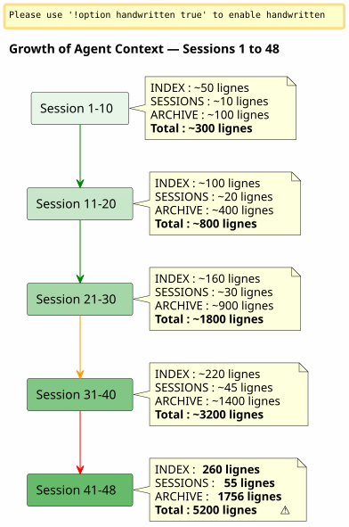

Sliding Window and Cold Wave: When the Agent Context Explodes and We Must Archive Without Losing
Published on 26 April 2026
Summary
After 48 sessions on a single project and 150+ in total, the Eager/Lazy governance system I had carefully built began to suffocate. The agent files, supposed to be lightweight, weighed in at 5,200 lines combined. The auto-loaded context was rising faster than my ability to control it. This article tells how I conceived a backup mechanism — somewhere between a sliding window and an identical cold wave — to keep an active context lightweight without ever losing anything.
The Signal: 5200 Lines
I am in the middle of session 048 on`magic-stick`, my Linux live ISO build project. Opencode watches me. As always, it automatically loaded my Eager files at the start of the session —AGENT.adoc, PROMPT_REPRISE.adoc, .agents/INDEX.adoc. Nothing abnormal.
But something is off. The responses are slower. The reasoning is more diluted. The agent forgets details it had in front of it two messages ago.
I open a terminal and type:
wc -l .agents/INDEX.adoc .agents/SESSIONS_HISTORY.adoc \
.agents/archives/COMPLETED_TASKS_ARCHIVE_2026-04.adoc260 lines for INDEX. 55 for SESSIONS_HISTORY.1756 for COMPLETED_TASKS_ARCHIVE.
The folder`sessions/`adds another ~3200 lines. Total :5200 linesof context that are loaded, one way or another, in the agent’s temporary brain.
The Eager/Lazy strategy I had theorized in the previous article works — but it has a birth defect I hadn’t anticipated: it does not haveno aging mechanism. Each session adds a line to INDEX, a paragraph to COMPLETED_TASKS, a file in sessions/. Nothing ever leaves. The context is a snowball that grows with each new session.

It’s not a bug, it’s a direct consequence of the session‑end procedure that meticulously archives every detail. The system is a victim of its own success.
The Diagnosis: Triple Redundancy
I ask the agent to diagnose the problem. His response is immediate and surgical.
file |
Lines |
Role |
Problem |
|
260+ |
EAGER (auto-charged) |
Table of all sessions since 001 —+1 line per session |
|
55 |
eager |
Summary table —redundancy with INDEX |
|
1756 |
EAGER (implicit) |
Complete details of all April sessions |
|
~5200 total |
LAZY (supposed) |
Individual archives, butnot usedbecause everything is already in COMPLETED_TASKS |
The agent identifies four root causes:
-
COMPLETED_TASKS_ARCHIVE absorbs everything— Instead of pointing to the archives`.sessions/`, it fully reproduces each session.
-
INDEX.adoc serves as a complete history— The "Recent Sessions" table contains 30+ entries.
-
SESSIONS_HISTORY.adoc redundant— Same info as INDEX, different format.
-
The LAZY rule is not respected— COMPLETED_TASKS is implicitly EAGER because it contains everything.
His/her proposal is radical: limit INDEX to 10 sessions, clear COMPLETED_TASKS, move SESSIONS_HISTORY to pure LAZY. Immediate gain:~1900 lines saved.
It’s clean, efficient, logical. But I have a problem with this approach.
Why I Refused the Obvious Solution
The agent’s solution is that of an engineer who optimizes a cache. Limit. Truncate. Remove redundancies.
But these "redundancies" are not. Each governance file captures adifferent angleon the same reality :
-
INDEX= macro view, executive dashboard
-
SESSIONS_HISTORY= linear chronological table, scored
-
COMPLETED_TASKS_ARCHIVE= detailed narrative with metrics
-
sessions/*.adoc = individual archives, full context
It’s not stupid duplication. It’s of thestructured multiple perspective. This is exactly what we need to distill — so that later, a human (or a future better‑trained LLM) can cross the angles and extract patterns.
Imagine a data scientist telling you: "Let’s remove 3 out of 6 columns, they’re correlated." What do you answer? That correlation isn’t redundancy when each column captures a different dimension of the same phenomenon. That it’s precisely this dimensional richness that makes the dataset usable.
It’s my intuition. And I defend it against the cold rationality of the agent.
_ I don’t see a silent catch-all in my idea. We don’t just dump everything; we move the structured result of the end-of-session procedure — each file with its angle, its redundancies that are actually an enrichment. It is this multidimensional material that will be better for the distillation. _
The agent takes the hit. And corrects himself.
The Proposal: Identical Cold Wave
The agent then proposes a finer mechanism, which respects my intuition of a rich dataset while solving the technical problem of the exploding context.
The principle is simple and directly inspired by the patternHot/Warm/Cold Storageapplied to records management:
-
Hot (eager)= the 10 last sessions in INDEX, PROMPT_REPRISE of session N+1, the 2 last session files
-
Chaud (paresseux)= SESSIONS_HISTORY recent, SCRIPT_VERIFICATION, all the reference documentation
-
Cold (backup/)= everything else, movedintact, without transformation, without reindexing
----
----
.agents/
├── INDEX.adoc → Sessions N-9 à N (10 dernières)
├── SESSIONS_HISTORY.adoc → Sessions N-9 à N
├── SCRIPT_VERIFICATION.adoc → Dernière vérif (pas d'historique)
├── PROMPT_REPRISE.adoc → Session N+1 uniquement
├── sessions/ → Sessions N-1 à N uniquement
└── backup/
└── Y2026-sessions-001-039/ ← Vague froide, COPIE INTÉGRALE
├── INDEX.adoc → Sessions 001 à 039 (complet)
├── SESSIONS_HISTORY.adoc → Sessions 001 à 039 (complet)
├── COMPLETED_TASKS_ARCHIVE.adoc → Sessions 001 à 039 (complet)
└── sessions/ → 001.adoc, 002.adoc...
----
The key of the mechanism:**The backup is not a central index, it is an exact copy of the past wave.**. When exceeding the horizon of 10 active sessions, we do not delete anything. We do not reindex anything. We do not merge anything. We take the agents file package as it was at session N-10, and we move it into`backup/`.
Active files, on the other hand, are truncated:
* INDEX: only the last 10 lines (sliding window)
* SESSIONS_HISTORY : the same
* COMPLETED_TASKS_ARCHIVE : new file for the current period
* sessions/ : only the last 2 sessions
[plantuml, format=svg, id=diag-hot-warm-cold, alt="Architecture Hot/Warm/Cold du contexte agent — EAGER/LAZY/backup"]
----
@startuml
skinparam backgroundColor #FEFEFE
skinparam defaultTextAlignment center
skinparam wrapWidth 200
title Architecture Hot / Warm / Cold of the Context Agent
package "HOT (EAGER)
Loaded automatically
~300 lines" as HOT #FFCDD2 {
file "INDEX.adoc
(10 sessions)" as IDX_HOT
file "PROMPT_REPRISE\n(session N+1)" as PRO_HOT
file "AGENT.adoc\n(absolute rules)" as AG_HOT
}
package "WARM (LAZY)
Loaded on demand
~500 lines" as WARM #FFF9C4 {
file "SESSIONS_HISTORY\n(last 10)" as HIS_WARM
file "SCRIPT_VERIFICATION\n(last)" as VER_WARM
file "PROCEDURES.adoc
(templates)" as PRO_WARM
file "*_REFERENCE.adoc\n(technical documentation)" as REF_WARM
}
package "COLD (backup/)
Never charged
Human read only" as COLD #BBDEFB {
folder "Y2026-001-039/" as WAVE {
file "INDEX (complete)" as IDX_COLD
file "SESSIONS_HISTORY
(complete)" as HIS_COLD
file "COMPLETED_TASKS
(complete)" as ARCH_COLD
folder "sessions/ (001-039)" as SESS_COLD
}
folder "Y2026-040-???\n(future)" as FUTURE
}
HOT --> WARM : "Agent goes up
if needed"
WARM --> COLD : "Never automatic
The human goes there alone"
note bottom of COLD
Règle : COPIE INTÉGRALE
Pas de transformation
Pas de réindexation
Read-only après archivage
end note
@enduml
----
The immediate gain is massive: the EAGER context goes from**~5200 lines to ~300 lines**. A division by 17. Without having lost a single line of historical data.
== Why This Is Not a Catch-All
The agent, in its first iteration, feared that`backup/`become a black box — a folder where you dump files you'll never read again. It's a legitimate fear. But it rests on a confusion.
A catch-all is when you throw files**without structure, without convention, without grouping logic**. Here, the backup is structured by period (Y2026-001-039), and each backup folder contains**the same structure**that the file`.agents/`active : INDEX, SESSIONS_HISTORY, COMPLETED_TASKS_ARCHIVE, sessions/.
It is not a catch-all. It is a**timestamped snapshot**. One could even say it's a simplified versioning mechanism — except that it does not version files individually, but the complete package of governance at a given point in time.
When you want to retrieve old information, you don't need a central index. You have two options:
1. **grep` targeted** : `grep -r "zsh" backup/Y2026-001-039/`— and you find everything that mentions zsh in the period, whatever the angle (INDEX, SESSIONS_HISTORY, session archive).
2. **Manual reintegration**: you temporarily copy the backup folder into the active context, and you ask the agent to analyze this specific period.
The index is implicit. It is in the very structure of the files — each one already being an index from its own perspective.
== The Shelf Metaphor
To make the mechanism intuitive, I conceptualized it as three shelves:
* **Shelf 1 (EAGER)**— the work plan. What I need *now*. Recent INDEX, PROMPT_REPRISE, absolute rules. Light, immediate, critical.
* **Shelf 2 (LAZY)**— the reference library. What I can retrieve on request. Technical references, recent history, procedures. Larger, but not loaded in memory.
* **Cellar (backup/)**— the cold archives. Everything that has passed but that I do not want to throw away. The agent never goes in there. The human goes down there when he wants to distill.
The agent initially proposed a fourth shelf — a`index-backup.adoc`that would be LAZY and would contain a table of contents for the entire backup. I refused. It would be an additional redundancy in a system that already suffers from linear growth. The structure of the archived files is already an index.
== The Two-Trigger Sensor
The conceptualization was solid, but there remained a blind spot:**When exactly to trigger the rotation?**The initial article identified it as an open question. Two days later, the answer is codified in the governance files of six projects: a two‑trigger sensor.
=== The Automatic Trigger — `N % 10 == 0
The first trigger is mathematical. When the session number is a multiple of 10 — session 10, 20, 30, 40 — the backup rotation runs automatically within the session end procedure, just after step 6.
Why 10? It's the compromise between two opposing forces: a window too short (5 sessions) loses the context needed for continuity; a window too long (20 sessions) does not solve the problem of context bloating. Ten sessions, at a pace of one to two sessions per day, cover roughly a week of work — enough for the agent to remember recent decisions, but not enough for the context to explode.
=== Threshold Trigger — 500 EAGER Lines
The second trigger is dynamic. Regardless of the session number, if the cumulative EAGER files exceed**500 lines**, the rotation is triggered.
This threshold protects against the scenario where sessions are exceptionally productive — a lot of content written in few sessions. A session that produces 120 lines of editorial content inflates COMPLETED_TASKS_ARCHIVE much faster than a debugging session that fixes two lines. The 500-line threshold, measured via`wc -l .agents/INDEX.adoc .agents/archives/COMPLETED_TASKS_ARCHIVE_*.adoc PROMPT_REPRISE.adoc`, captures this asymmetry
=== The Manual Trigger — "rotation backup
Finally, the human keeps control. The keywords`rotation backup`, `backup rotation` ou `lance la rotation backup`trigger the procedure on demand, independently of the end of session. Useful when you feel that the context is becoming heavy but you are not yet at a multiple of 10, or when you want to archive a work phase before starting a new one.
[plantuml, format=svg, id=diag-capteur-trigger, alt="Les trois déclencheurs du capteur de rotation backup — automatique, seuil, manuel"]
----
@startuml
skinparam backgroundColor #FEFEFE
skinparam defaultTextAlignment center
skinparam wrapWidth 200
title Backup Rotation Sensor — The Three Triggers
start
:Procédure de fin de session;
note right: Mots-clés "end of session"\nou "we stop there"
:Étapes 1 à 6\n(archivage standard);
note right
1. Archive sessions/N.adoc
2. MAJ PROMPT_REPRISE
3. MAJ SESSIONS_HISTORY
4. MAJ INDEX.adoc
5. MAJ TEST_COVERAGE
6. MAJ COMPLETED_TASKS
end note
if (N % 10 == 0\nOU\nEAGER cumulé > 500 lignes ?) then (oui)
:⚙️ Rotation Backup\n(étape 7);
note right
1. Créer backup/Y20XX-sessions-X-Y/
2. Copier intégrale INDEX + HISTORY
+ COMPLETED_TASKS + sessions/
3. Tronquer actifs à 10 sessions
4. Ajouter _Localisation active_
end note
else (non)
:Pas de rotation;
endif
:Checklist [✅] x 7\n(si applicable);
stop
@enduml
----
This diagram shows the exact insertion of the sensor in the end-of-session procedure. Step 7 is optional — it is executed only if one of the two conditions is true — but it is systematically *checked*. The final checklist includes`[✅] 7. Backup roté (si applicable)`.
=== The Closed Loop
This sensor closes the loop opened by the previous article. The Eager/Lazy governance had solved the agent memory problem between sessions. The Hot/Warm/Cold mechanism solved the problem of growing memory. The two-trigger sensor solves the problem of *when* — removing the human’s mental load of monitoring context size.
[plantuml, format=svg, id=diag-boucle-fermee, alt="Les trois couches de la gouvernance agent — Eager/Lazy, Hot/Warm/Cold, Capteur"]
----
@startuml
skinparam backgroundColor #FEFEFE
skinparam defaultTextAlignment center
title The Three Layers of Agent Governance
left to right direction
package "Layer 1 — Memory
(Article 0108)" as C1 #E8F5E9 {
rectangle "**EAGER**
Dashboard
Auto-loaded" as EAG
rectangle "**LAZY**
Owner's manual
Loaded on demand" as LAZ
EAG -[hidden]right-> LAZ
}
package "Layer 2 — Aging\n(Article 0110)" as C2 #FFF9C4 {
rectangle "**HOT**
10 active sessions
~300 lines" as HOT
rectangle "**WARM**
References
Procedures" as WRM
rectangle "**COLD**\nbackup/\nbackup/\nCold wave" as CLD
HOT -[hidden]right-> WRM
WRM -[hidden]right-> CLD
}
package "Layer 3 — Trigger
(Today)" as C3 #BBDEFB {
rectangle "**Auto**\nN % 10 == 0" as AUTO
rectangle "**Threshold**
> 500 lines" as SEUIL
rectangle "Manuel
rotation backup" as MAN
AUTO -[hidden]right-> SEUIL
SEUIL -[hidden]right-> MAN
}
C1 --> C2 : "Memory grows\n→ we need a mechanism\nof aging"
C2 --> C3 : "Aging
→ a trigger is needed
to execute it"
note bottom of C3
✅ Déployé sur 6 projets
magic-stick · bakery-gradle
plantuml-gradle · cheroliv.com
jhipster-gradle-plugins
quizz-benchmark-gradle
end note
@enduml
----
The three layers stack logically. The first gives memory to the agent. The second prevents this memory from overwhelming the agent. The third automates the maintenance of this memory so that the human does not have to think about it.
=== The Effective Migration on cheroliv.com
The mechanism did not remain theoretical. Sur`cheroliv.com`, the first backup rotation was executed on April 29, 2026 — sessions -6 to 2 have migrated to`.agents/backup/Y2026-sessions-neg6-a-002/`:
|===
|File |Before rotation |After rotation |Gain |`.agents/INDEX.adoc` |19 listed sessions |10 sessions (3-12) |-9 entries |`.agents/SESSIONS_HISTORY.adoc` |18 sessions |10 sessions |-8 entries |`COMPLETED_TASKS_ARCHIVE` |161 lines (sessions 1-12) |135 lines (sessions 3-12) |-26 lines |`sessions/` |20 files |10 files |-10 files |**backup/** |Nonexistent |1 cold wave (10 archived sessions) |+1 cold pack
|===
The gain in lines was modest — the project is young, 12 sessions — but the important thing is that the**mechanism is in place**. The next automatic rotation will trigger at session 20, or sooner if the 500 EAGER lines are reached.
== The Human-Agent Lesson
This session 048 taught me something fundamental about collaborating with an AI agent.
The agent has a natural bias: it seeks to**optimise? Actually French verb "optimiser" infinitive means "to optimize". So output just "optimize".
</think>
optimize**, à **simplify**, à **eliminate redundancies**. This is the bias of a system trained to produce clean and concise answers. Faced with a rich and multidimensional dataset, its first reflex is to reduce it to its simplest expression.
Human, on the other hand, has a different intuition: he feels that structured redundancy is a**asset**, not a flaw. That the diversity of angles on the same reality is precisely what will allow, later, a quality distillation.
It's not that the agent is wrong. It's that its 'optimum' is not mine. The agent optimizes for the**present**— the immediate context, the quick response to the question asked. Humans optimize for the**future**— the ability to retrieve, cross, distill in three months or three years.
____ What I want is the raw material. Your thoughts, your hesitations, your answers to my questions. Not your synthesis. Synthesis, I know how to do better than you. I want the raw material. ____
This sentence that I told him at the end of the session sums it all up. The agent is a production tool. The human is a distillation tool. Governance is not meant for the agent to understand everything on its own — it is meant for the human to later work the produced material.
The identical cold wave is the architectural translation of this philosophy: we discard nothing, we merge nothing, we reindex nothing. We move the intact package. Distillation will come later, manually, by the human.
== The logical continuation of the preceding article
If you have readlink:/blog/2026/0108_gouvernance_agent_opencode_eager_lazy_post.html[the article on the Eager/Lazy strategy], you will recognize the natural progression :
1. **Article 0108**The Eager/Lazy governance: *how* to structure the agent context into two availability levels
2. **This article 0110**— The backup mechanism: *how* to age this context without losing it when it becomes too voluminous
The first article answered the question: "The agent doesn’t remember anything between two sessions, how do you give it memory?
This one answers the question that inevitably follows from the first: "Memory grows each session; how to prevent it from choking the agent without erasing it?
The answer lies in a pattern:**Hot/Warm/Cold**, applied to governance files. And in one principle:**never lose anything, always relocate everything**.
== Links
* Previous article:link:/blog/2026/0108_gouvernance_agent_opencode_eager_lazy_post.html[Managing an AI Agent with AsciiDoc]
* My site: https://cheroliv.com
* The project`magic-stick`: https://github.com/cheroliv/magic-stick
---
*A good governance system never deletes data. It files them.*
----